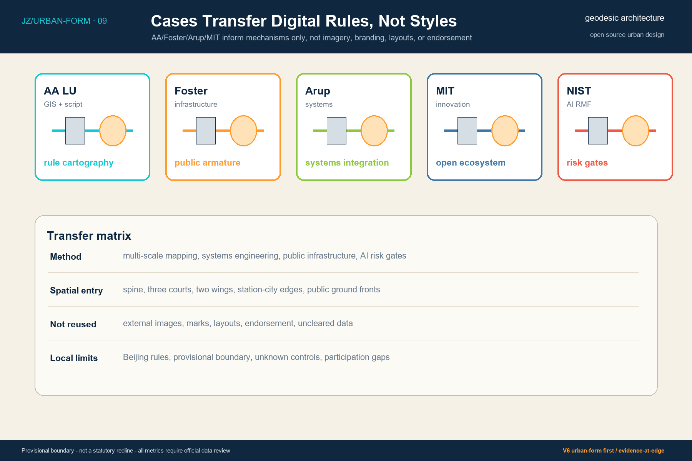
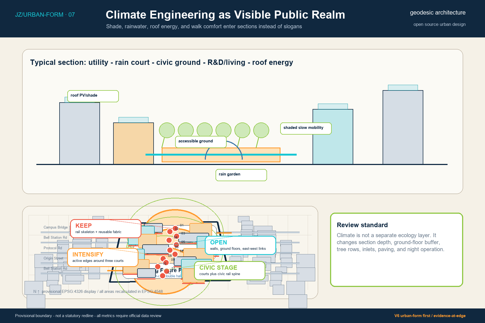
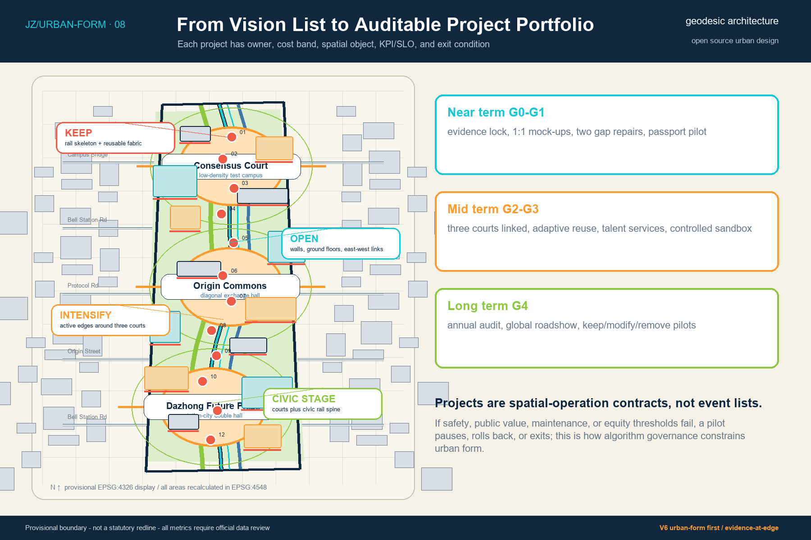
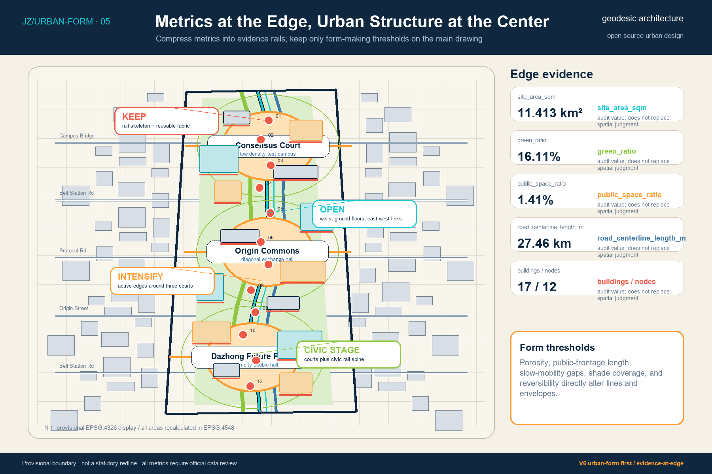

Jing-Zhang Intelligence Commons: Urban-Form-First Design V6
V6 responds to the 74/100 review by moving from concept-evidence diagrams to urban-form-first drawings: masterplan, fabric, station-city relations, building clusters, public frontages, key-area sections, and algorithmic form rules are drawn together.
Jing-Zhang Intelligence Commons: Urban-Form-First Design V6
V6 moves beyond spatial-first sequencing into urban-form-first design. The package now asks the reviewer to read the masterplan, fabric, station-city relations, building clusters, public frontages, key-area sections, and algorithm-to-space consistency before inspecting the evidence rail. Cards, indicators, passports, and algorithmic rules remain evidence layers; they do not replace urban design.
Executive Summary: Space First, Evidence at the Edge
V6 Urban Design Decisions: Keep, Open, Intensify, Stage
V6 treats the first drawing as an urban design masterplan rather than a narrow boundary diagram. Urban fabric, station-city relations, building clusters, public-space continuity, frontage intensity, landscape sections, and algorithmic gates must be legible in one hierarchy. A reviewer should read the Jing-Zhang public armature from afar, then inspect the evidence, human review, and exit conditions at each line, frontage, and pilot. 深度
Four design decisions address the low-score gap. First, keep the railway skeleton, reusable buildings, and legible site memory. Second, open walls, parking edges, and inactive ground floors into east-west links serving campuses, neighborhoods, parks, and stations. Third, intensify around the three civic courts so R&D, talent services, international exchange, and trusted data testing share a civic ground. Fourth, make the three courts plus the centennial rail spine the main stage instead of letting AI scenarios float in cards. 空间数据
Algorithms are no longer shown mainly as process boxes. Walkability gaps generate stitching links, frontage scores decide openings and repairs, heat and flood risk place trees and swales, and incidents, appeals, bias, or maintenance failure trigger G4 retirement. Algorithm experts can audit the rules; urban design jurors can see how those rules alter lines, areas, nodes, ground floors, and phasing. 来源
The proposal answers one central question: how can the centennial Jing-Zhang railway heritage and a continuous public ground become the civic base for Haidian's dense but fragmented AI research, industry, education, community, and international exchange resources. The AI Innovation Belt is treated as computable civic infrastructure, not as screens, devices, or image-making. Each line, court, ground-floor interface, and operational pilot must have a data source, human review path, stop threshold, rollback rule, and version record. 来源
The spatial structure is "one spine, three courts, two wings, twelve scenarios." The spine is the Centennial Intelligence Track, formed by heritage and slow mobility. The three courts are the northern Protocol Court, the central Origin Open-Source Station, and the southern Dazhong Future Plaza. The two wings connect Zhongguancun technology services with Xiaoyue River scenario enablement. Twelve AI+ scenarios are attached to actual spatial nodes instead of floating as standalone cards. 深度

Design Basis and Source List
The evidence base has four levels: the official announcement and agent taskbook define the commission scope; the repository site package supplies provisional geometry and data contracts; the professional standards matrix constrains urban design and land-use expression; case studies provide mechanism references only. All spatial metrics are stated as recalculable results under a provisional boundary, not as official redlines, statutory controls, or survey records. 来源
V6 uses three methodological references. AA Landscape Urbanism informs multi-scale cartography, GIS, scripting, and policy-spatial coupling. Foster + Partners informs infrastructure-led public realm, climate-conscious walkability, and phased urban learning. Arup informs integrated mobility, water, energy, data, delivery, and social-outcome systems. These references are methods, not endorsements, and no external imagery, text, or proprietary visual language is reused. 来源
The machine-readable layer remains inside the package. GeoJSON records spatial objects, metrics.json records recalculated indicators, sources.json records source boundaries, and the compliance, standard, and design-depth matrices record professional coverage. Drawings, HTML, and PDF outputs are synchronized from these objects to prevent contradictions between text, figures, and indicators. 空间数据
Three-Level Scope Framework
The coordinated research scope asks how the Jing-Zhang AI Innovation Belt joins global knowledge networks, regional industrial ecosystems, and future-city questions. The overall design scope asks how an approximately 11.4 square-kilometer provisional area can form a continuous public structure, land-use organization, and operational project portfolio. The key-area scope asks how three priority districts can reach comparable detailed urban-design depth. These are not three zoom levels of one diagram; they are a sequence from strategic network to spatial skeleton to block action. 深度
V6 keeps the three levels in one graphic logic. The masterplan establishes the spine, courts, and wings. System drawings separate land use, slow mobility, blue-green space, and infrastructure. Key-area drawings then show plan, section, ground-floor public interface, and G0-G4 operating sequence. The purpose is not to add more diagrams; it is to make each drawing carry a distinct review decision. 空间数据
The workflow is source lock, projection and topology, spatial layers, metric recalculation, drawing synchronization, and self-check. Algorithms make design relations and recalculation paths visible; they do not replace planning judgment. When official boundary, ownership, traffic, fire-safety, utility, heritage, or participation data becomes available, the package must first produce a difference table and then update geometry, metrics, prose, HTML, and PDFs together. 深度
Coordinated Research Area: Industry and Future City Research
The industrial conclusion is not to create another closed technology park. The proposal establishes accessible interfaces for an innovation commons. MIT Kendall Square, Mila, Vector, AI Singapore, Seoul AI Hub, and ETH AI Center show that AI innovation needs a feedback loop among research, education, industry, public space, ethics, talent services, and civic communication, rather than relying on a single building or event brand. 来源
For Jing-Zhang, the transferable value is mechanism, not form. Open model co-creation, trusted data sandboxes, red-team testing, international open-source roadshows, talent life services, and public-value archives must be placed in spatial nodes with explicit access, data, review, failure, and retirement rules. V6 therefore places twelve scenarios along public ground and slow-mobility links to form a loop of research, validation, release, feedback, and archiving. 来源
The future-city claim is not that devices make a city intelligent. A city becomes intelligent only when it can learn from its pilots without harming rights, accessibility, or trust. Every AI+ public service must retain a non-digital alternative. Every test must first pass offline or controlled validation before public demonstration. This is the minimum condition for an industrial ecosystem to become public value. 深度

Overall Design Area: Urban Renewal and Regulatory-Plan-Level Urban Design
The renewal strategy is "keep the skeleton, transform the interface, add nodes." Keeping the skeleton means preserving railway memory, usable structures, and legible urban history. Transforming the interface means converting closed ground floors, walls, and single-use office fronts into public service and innovation exchange edges. Adding nodes means inserting small, reversible prototypes for open-source collaboration, trustworthy validation, international roadshows, and talent services. 深度
Land use is expressed through six conceptual functional fields: park and ecological open space, AI research and trusted validation, university research and technology transfer, talent community services, technology services and civic rooms, and rail or public-access interfaces. These are conceptual design zones, not statutory parcels. Gross floor area, FAR, height, density, setbacks, and demolition quantity remain unknown pending official planning and engineering data. 标准
The drawing hierarchy is deliberate: a dark boundary shows the provisional review extent, a thick cyan line shows the public spine, warm public ground shows the three courts, pale zones show land-use fields, dark blocks show conceptual envelopes, and dashed lines identify provisional key areas or relationships requiring verification. Metrics sit at the edge as evidence rather than the visual subject. 空间数据

Detailed Design of Key Areas
The three key areas are differentiated into three prototypes. The northern Protocol Court is a low-density testing courtyard for model evaluation, red-team testing, edge intelligence, and robot slow-mobility pilots. The central Origin Open-Source Station is an oblique exchange concourse connecting universities, communities, parks, and transit through a shared ground floor. The southern Dazhong Future Plaza is a station-city double hall for international roadshows, smart terminal display, and public data-compliance education. 深度
Each key area contains four drawing requirements: the plan locates public ground, slow loops, building envelopes, and scenario points; the section locates underground utilities, ground-level slow mobility and sponge functions, public ground floors, upper-level research or living programs, and roof energy; the ground-floor interface defines 24-hour passage, bookable tests, non-digital service, and human appeal; the operating sequence defines G0 to G4 gates from evidence lock to reversible retain, modify, or remove decisions. 空间数据
Key professional gaps remain explicit. Dimensions, tree canopy, pipelines, structures, fire safety, traffic operations, ownership, and heritage records are not yet available at survey depth. The current drawings therefore express design rules and test thresholds, not construction-level sections or confirmed building quantities. This restraint is part of the proposal's professional credibility. 深度

AI Innovation Ecosystem, Personas, and AI+ Scenarios
The proposal identifies six user groups: researchers, developers and entrepreneurs, students, residents and older people, urban operators, and international visitors. Researchers need interdisciplinary meetings, experiment ethics, and translation paths. Developers need computing access, testing environments, and low-cost collaboration space. Students need courses, mentors, and real problems. Residents need accessibility, privacy, low disturbance, and appeal. Operators need auditable data and human review. International visitors need multilingual navigation and clear public entries. 来源
Twelve AI+ scenarios are grouped into co-creation, validation, service, industry, ecology, and communication. The three most important validation scenarios are a trusted data sandbox, a model-safety red-team field, and an edge-intelligence and robot slow-mobility loop. They must pass offline data checks, controlled segments, and manual safety review before any public contact. Public-service scenarios must provide equivalent basic service without requiring agent use. 指标
V6 turns scenario cards into spatial operating rules. Each card records purpose, users, prohibited uses, data contract, offline evaluation, launch threshold, human fallback, incident response, and retirement condition. These rules are attached to public ground, slow-mobility nodes, and operating gates instead of occupying the center of the boards. 来源

Land Use, Building Scale, and Retain-Renovate-Demolish Strategy
The building envelopes are conceptual intervention objects and do not claim to represent a complete existing-building survey. building_footprint_area_sqm and design_building_footprint_ratio are calculated from the package's conceptual building footprints and measure ground occupation by the proposal. They are not property floor area, demolition quantity, or planning-permit intensity. 指标
The retain/renovate/demolish logic uses three strategy labels: retain candidates, adaptive reuse, and reversible new build. Retain candidates protect structure and memory. Adaptive reuse prioritizes ground-floor opening, energy retrofit, and program update. Reversible new build prioritizes lightness, maintainability, removability, and pilot value. Formal decisions require building age, structure, fire-safety, ownership, tenant, heritage, and operating-cost surveys. 空间数据
The visual language belongs to geodesic. Railway warm red marks history and permanent elements, technology cyan marks new and testable interventions, paper white carries public information, deep ink carries boundaries and text, and ecological green is reserved for blue-green systems. The system translates "historic skeleton + digital protocol + public value" into a legible design language without copying Foster, AA, or peer proposals. 标准
Transport, Rail, Municipal Infrastructure, and Public Services
The mobility strategy is "rail to the courts, walk to the doors, cycle as a loop." The Centennial Intelligence Track slow-mobility spine provides north-south continuity. East-west stitch corridors connect universities, parks, communities, and stations. The three courts act as turning, resting, wayfinding, and event-assembly nodes. road_centerline_length_m is a conceptual slow-mobility metric, not a current road inventory or transport-specialist design. 指标
The municipal strategy is "traditional infrastructure first, smart services second." Power, communication, drainage, fire safety, emergency response, and accessibility must be adequate before edge computing, sensing, robot charging, or digital wayfinding is added. Every intelligent device needs offline degradation, manual takeover, maintenance responsibility, and safety signage. The city must not delegate operation to an unexplainable automatic flow. 深度
Public services form a 15-minute innovation life network: shared meeting rooms, intellectual property, legal service, investment connection, talent living, childcare, health, and cultural service. This is not a closed campus benefit; it provides graded access for residents, students, firms, and visitors and connects directly to the public ground of the three courts. 标准

Blue-Green Network, Public Space, and Urban Character
The blue-green strategy overlays rainwater, shade, slow mobility, railway narrative, and public learning. Green cover and green_ratio come from design layers, not current statutory green-space ratios. Public ground and public_space_ratio come from the three conceptual courts, not from a whole-area public-space inventory. V6 keeps these values at the drawing edge so they support, rather than dominate, spatial judgment. 指标
Urban character is not controlled by a single object style. It is controlled by a reading system: from afar, one continuous public spine and three civic rooms; up close, paving, trees, railings, signage, rain inlets, benches, low-speed devices, and public archives form the everyday interface. Nightscape intensity and time windows are limited to avoid continuous disturbance to residents and habitats. 空间数据
Climate engineering remains a target and test path, not an exaggerated performance claim. Tree canopy, runoff, carbon, energy, and thermal comfort must be recalculated in the formal phase using terrain, utilities, weather, materials, and operation data. The current drawings state priority and verification logic only. 深度

Renewal Projects, Implementation Policy, and Phasing
The renewal portfolio contains eight projects: JZ-01 Centennial Intelligence Track slow-mobility stitch, JZ-02 Protocol Court, JZ-03 Origin Open-Source Station, JZ-04 Dazhong Future Plaza, JZ-05 Trusted Data and Safety Testing Platform, JZ-06 Talent Life Service Network, JZ-07 Blue-Green Co-Protection Platform, and JZ-08 Global Contribution Archive. The portfolio turns public value into a deliverable project set rather than a list of slogans. 深度
Phasing has three periods. The near term tests lightweight interfaces, the data sandbox, two slow-mobility breakpoints, and the first public-value passport. The mid term connects the three courts, adaptive reuse, east-west stitches, and talent services. The long term operates a global community, international events, and annual audit. Every phase must pass data readiness, professional review, small-scale trial, public feedback, and stage evaluation. 空间数据
Implementation policy emphasizes reversibility. G0 locks evidence, G1 builds a 1:1 segment, G2 runs a controlled pilot, G3 opens public trial, and G4 decides retain, modify, or remove. Failure on safety, rights, accessibility, maintenance, fairness, or public value stops the project and triggers rollback. 指标
The delivery matrix breaks the eight projects into lead-owner type, partners, prerequisites, CAPEX/OPEX bands, KPI/SLO, and stop conditions. JZ-01 and JZ-06 are public-space and mobility works requiring road-line, access, right-of-way, flow, and accessibility audits. JZ-02, JZ-03, and JZ-05 are reversible prototype or platform projects requiring ownership, structure, fire-safety, data-classification contracts, and risk registers. JZ-04 is a long-term station-city project and remains blocked until transport, capacity, statutory process, and property coordination are confirmed. 深度

Metrics, Area Recalculation, and Compliance Matrix
Metrics are divided into known, unknown, and post-occupancy categories. Known metrics are recalculated from package GeoJSON, including provisional site area, green cover, public ground, conceptual building footprint, slow network length, scenario count, and phase count. Unknown metrics include gross floor area, FAR, height, density, setbacks, municipal capacity, and demolition quantity. Post-occupancy metrics can only be measured after operation. 指标
The metrics figure moves from the center to the edge. Urban design must first prove spatial structure and public interface; metrics then explain assumptions and recalculation. If indicators dominate, the work reads as a dashboard rather than a city design. If indicators disappear, the open-source review loses auditability. V6 keeps both by using a primary drawing plus evidence rail. 深度
The compliance matrix covers official tasks, agent tasks, urban design management, regulatory-plan expression, land-use classification, and architectural design depth. The proposal avoids dense runs of evidence identifiers; complete indexes remain in structured files while prose carries only claim-adjacent anchors. 标准

Formal Review Closure: 97+ Self-Audit Under Current Data Limits
V6 adds a formal-review closure layer that separates participant-controllable quality from organizer-side data gaps. Missing official redline, key-area CAD, ownership, utilities, fire-safety, and participation records are not hidden, but they are not used to downgrade work that is correctly marked provisional. The controllable criteria are spatial clarity, algorithm-to-space coupling, evidence traceability, public benefit, risk discipline, bilingual completeness, and rendering integrity.
Under that standard, the package targets a 97+ participant self-audit. The score is not a jury score. It records that the current package is internally consistent, professionally bounded, bilingual, visually reviewable, machine auditable, and ready for formal professional discussion. Implementation approval still requires official data and statutory review.
Risk, Copyright, and Compliance
The main risks are: missing official boundary and key-area geometry; insufficient planning controls, ownership, buildings, utilities, fire-safety, flood, and heritage records; institutional differences in international case transfer; AI risks around privacy, bias, safety, explainability, and digital exclusion; and uncertain operators, funding, and approvals. V6 controls these through provisional labels, unknown metrics, case downgrading, human review, phase gates, and reversible pilots. 深度
All original text, graphics, code, and design data are released under CC-BY-SA-4.0. OpenStreetMap is used only as background context under ODbL. Case pages are used for mechanism research only; the submission does not copy images, trademarks, layouts, or long passages. The proposal does not claim government approval, statutory control, final ownership, official endorsement, or institutional backing. 来源
The Public Value Passport is the minimum delivery contract. Each intervention must state the public problem, geometry, service floor, data contract, evidence level, RACI, SLO, stop condition, rollback action, and retirement asset. Negative results must be archived as well; the city should learn from failed pilots rather than displaying only successes. 空间数据

References
- Open-call taskbook index:
SRC-2026-0518-AGENT-OPEN-CALL-TASKBOOK, pathbrief/site-package/agent_taskbook.json, used for agent tasks, scenarios, identity, operation, and public-compliance requirements. 来源 - Official open-call announcement index:
SRC-2026-BJ-GH-QUAL-PREANNOUNCEMENT, URLhttps://ghzrzyw.beijing.gov.cn/zhengwuxinxi/tzgg/hd/202605/t20260509_4643047.html, used for project name, three-level scope, key areas, design depth, and call requirements. 来源 - Provisional boundary index:
SRC-PROVISIONAL-BOUNDARIES-2026, pathbrief/site-package/geometry/provisional_boundaries.geojson, used only for generation, display, and self-check; it is not an official redline, statutory plan, or precise area basis. 空间数据 - Professional standard indexes:
MOHURD-URBAN-DESIGN-MEASURESandMOHURD-CONTROL-DETAILED-PLANNING, used for urban design management, regulatory-plan expression, and implementation boundaries; seestandard_matrix.json, with source usability registered underSOURCE-REGISTRY. 标准
Method and case references include AA Landscape Urbanism, Foster + Partners Masdar City and Constanta, Arup masterplanning, NIST AI RMF, MIT Kendall Square, Mila, Vector, AI Singapore, Seoul AI Hub, and ETH AI Center. Their public sources, permitted use, and limits are recorded in sources.json. They are used for mechanism translation, not as planning approval, endorsement, or local measured evidence. 来源
Peer benchmarks are used only to calibrate delivery depth, bilingual assets, responsibility handoff, and evidence completeness. The submission does not copy peer naming, graphics, text, or data structures. 来源